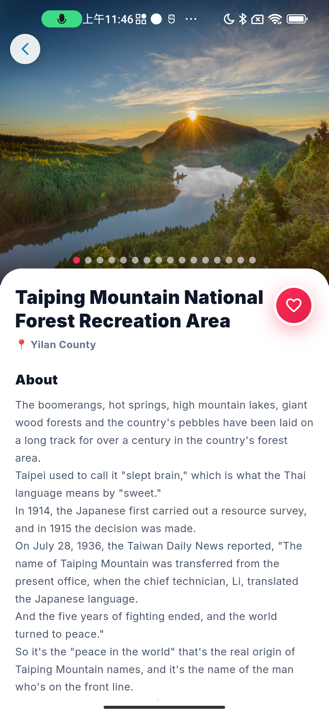
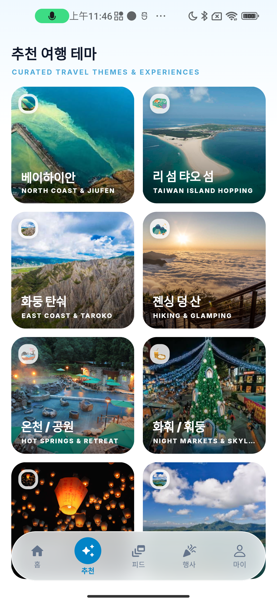
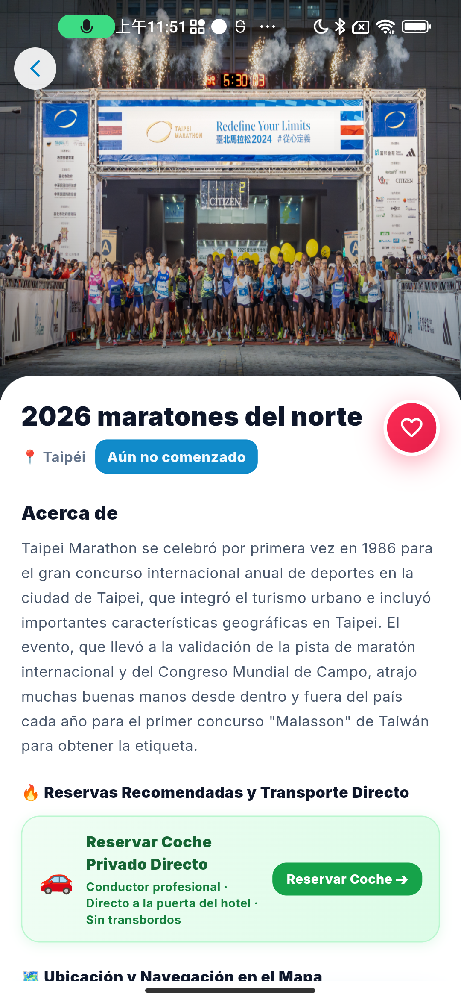
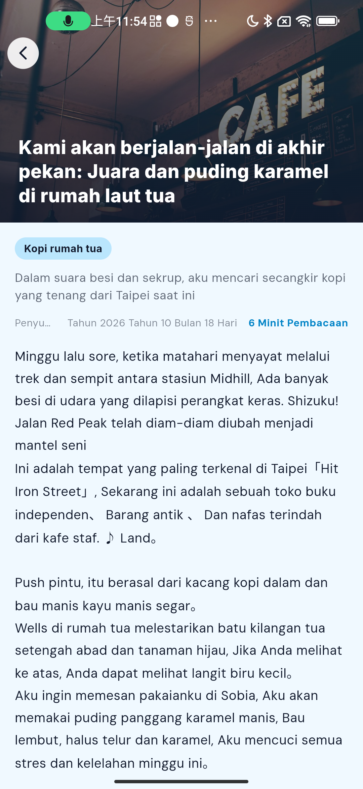
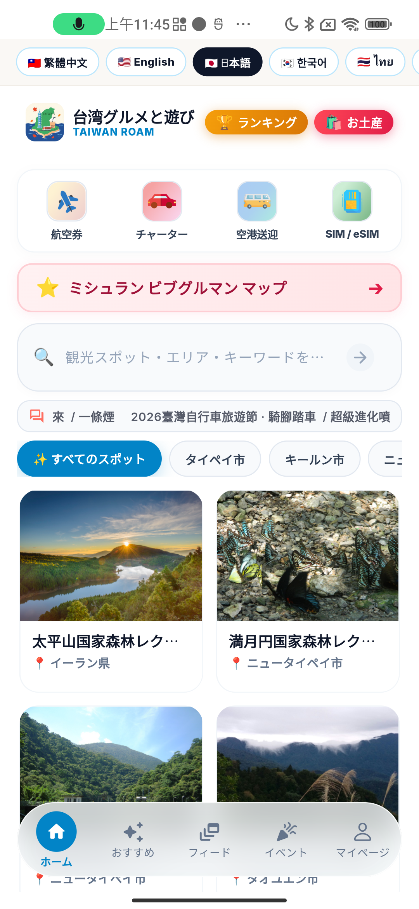

宜蘭・森林巨木步道
太平山森鐵秘境
01漫步高山湖泊與巨木森林，搭乘百年蹦蹦車，走入百年林業人文歷史深處。
專為深度漫遊、獨旅放空與國際自由行旅人打造的隨身電子地圖。全新升級極光美學介面，整合全台私房景點、老宅風格咖啡、期間限定活動展演與 eSIM 專車接送！

漫步高山湖泊與巨木森林，搭乘百年蹦蹦車，走入百年林業人文歷史深處。

暮色降臨穿梭於紅燈籠石階間，沿著濱海公路遠眺基隆嶼海天一色的浪漫。

在舊鐵器五金聲響中，推開老宅木門，品味冠軍精品咖啡與手工焦糖布丁的甜美。

站在太麻里與東海岸聽太平洋浪濤，打開地圖找到沿海公路旁的隱藏私房景點。

結合城市觀光與國際賽道，一鍵預約專車接送與活動行程，精彩盛事不錯過。

遠離塵囂探訪金門、澎湖與綠島，或在山嵐間泡入天然溫泉，享受最純粹的療癒時光。




App 完整整合台灣各縣市的私房景點、主題旅遊路線（如九份、跳島、秘境溫泉）、期間限定展覽活動、老宅咖啡散步與在地美食。
支援包含繁體中文、英文、日文、韓文、泰文、越南文、馬來文、菲律賓文、印地文、印尼文與西班牙文等 11 國語言，並整合 eSIM 網卡與機場專車預約，非常適合自由行旅客。
可以！開啟定位權限後，在地圖上就能即時瀏覽你身邊的景點與活動，並可一鍵開啟 Google 地圖或 Apple 地圖導航前往。
是的！「台灣吃喝玩樂地圖」提供 iOS (iPhone/iPad) 與 Android 版免費下載使用，隨時隨地開啟你的下一次台灣旅程。
立即免費下載「台灣吃喝玩樂地圖」，讓全台私房景點、文化展演與老宅美味成為你旅程中最難忘的回憶。